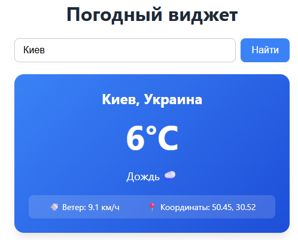

URLSearchParams) и получением текущей погоды (температура, скорость ветра, WMO-код состояния).404), с выводом информативного сообщения об ошибке.Главный компонент управления состоянием загрузки, выполнения асинхронных запросов к Open-Meteo API и обработки ошибок
<script setup>
import { ref } from 'vue'
import SearchBar from './components/SearchBar.vue'
import WeatherCard from './components/WeatherCard.vue'
import ErrorAlert from './components/ErrorAlert.vue'
const weatherData = ref(null)
const errorState = ref(null)
const isLoading = ref(false)
const fetchWeatherByCity = async (cityName) => {
isLoading.value = true
errorState.value = null
weatherData.value = null
try {
// 1. Формируем query-параметры для поиска координат города
const geoParams = new URLSearchParams({
name: cityName,
count: '1',
language: 'ru',
format: 'json'
})
const geoResponse = await fetch(
`https://geocoding-api.open-meteo.com/v1/search?${geoParams.toString()}`
)
if (!geoResponse.ok) {
throw { status: geoResponse.status, message: 'Ошибка при поиске координат города.' }
}
const geoData = await geoResponse.json()
// Если API вернул пустой массив results — город не существует (404)
if (!geoData.results || geoData.results.length === 0) {
throw { status: 404, message: `Город «${cityName}» не найден.` }
}
const { latitude, longitude, name, country } = geoData.results[0]
// 2. Передаем query-параметры (?latitude=...&longitude=...) в запрос погоды
const weatherParams = new URLSearchParams({
latitude: latitude.toString(),
longitude: longitude.toString(),
current_weather: 'true'
})
const weatherResponse = await fetch(
`https://api.open-meteo.com/v1/forecast?${weatherParams.toString()}`
)
// Проверка HTTP-статуса ответа
if (!weatherResponse.ok) {
throw {
status: weatherResponse.status,
message: 'Не удалось загрузить данные о погоде с сервера.'
}
}
const data = await weatherResponse.json()
weatherData.value = {
city: name,
country: country || '',
latitude,
longitude,
temperature: data.current_weather.temperature,
windspeed: data.current_weather.windspeed,
weathercode: data.current_weather.weathercode
}
} catch (err) {
errorState.value = {
status: err.status || 500,
message: err.message || 'Произошла сетевая ошибка при выполнении запроса.'
}
} finally {
isLoading.value = false
}
}
</script>
<template>
<main class="container">
<h1>Погодный виджет</h1>
<!-- Форма поиска -->
<SearchBar :loading="isLoading" @search="fetchWeatherByCity" />
<!-- Условный рендеринг: блок ошибки, карточка погоды или подсказка -->
<ErrorAlert
v-if="errorState"
:status-code="errorState.status"
:message="errorState.message"
/>
<WeatherCard
v-else-if="weatherData"
:weather="weatherData"
/>
<p v-else-if="!isLoading" class="placeholder">
Введите название города, чтобы узнать текущую погоду.
</p>
</main>
</template>
<style scoped>
.container {
max-width: 460px;
margin: 40px auto;
padding: 0 16px;
font-family: system-ui, -apple-system, sans-serif;
}
h1 {
text-align: center;
color: #1f2937;
}
.placeholder {
text-align: center;
color: #6b7280;
}
</style>Компонент формы поиска города с валидацией ввода и блокировкой кнопки во время запроса
<script setup>
import { ref } from 'vue'
defineProps({
loading: {
type: Boolean,
default: false
}
})
const emit = defineEmits(['search'])
const cityInput = ref('')
const handleSubmit = () => {
const trimmed = cityInput.value.trim()
if (trimmed) {
emit('search', trimmed)
}
}
</script>
<template>
<form @submit.prevent="handleSubmit" class="search-form">
<input
v-model="cityInput"
type="text"
placeholder="Введите город (например, Киев, Берлин)..."
:disabled="loading"
class="search-input"
/>
<button type="submit" :disabled="loading || !cityInput.trim()" class="search-btn">
{{ loading ? 'Поиск...' : 'Найти' }}
</button>
</form>
</template>
<style scoped>
.search-form {
display: flex;
gap: 8px;
margin-bottom: 20px;
}
.search-input {
flex: 1;
padding: 10px 14px;
border: 1px solid #ccc;
border-radius: 8px;
font-size: 16px;
}
.search-btn {
padding: 10px 18px;
background-color: #3b82f6;
color: white;
border: none;
border-radius: 8px;
font-size: 16px;
cursor: pointer;
}
.search-btn:disabled {
background-color: #93c5fd;
cursor: not-allowed;
}
</style>Компонент карточки отображения текущей температуры, скорости ветра, координат и расшифровки WMO-кодов погоды
<script setup>
import { computed } from 'vue'
const props = defineProps({
weather: {
type: Object,
required: true
}
})
// Расшифровка WMO кодов погоды Open-Meteo
const weatherDescription = computed(() => {
const code = props.weather.weathercode
if (code === 0) return 'Ясно ☀️'
if ([1, 2, 3].includes(code)) return 'Переменная облачность ⛅'
if ([45, 48].includes(code)) return 'Туман 🌫️'
if ([51, 53, 55, 61, 63, 65, 80, 81, 82].includes(code)) return 'Дождь 🌧️'
if ([71, 73, 75, 77, 85, 86].includes(code)) return 'Снег ❄️'
if ([95, 96, 99].includes(code)) return 'Гроза ⛈️'
return 'Пасмурно ☁️'
})
</script>
<template>
<div class="weather-card">
<h2 class="city-title">{{ weather.city }}, {{ weather.country }}</h2>
<div class="temp">{{ Math.round(weather.temperature) }}°C</div>
<p class="condition">{{ weatherDescription }}</p>
<div class="details">
<span>💨 Ветер: {{ weather.windspeed }} км/ч</span>
<span>📍 Координаты: {{ weather.latitude.toFixed(2) }}, {{ weather.longitude.toFixed(2) }}</span>
</div>
</div>
</template>
<style scoped>
.weather-card {
background: linear-gradient(135deg, #3b82f6, #1d4ed8);
color: white;
padding: 24px;
border-radius: 16px;
text-align: center;
box-shadow: 0 10px 15px -3px rgba(0, 0, 0, 0.1);
}
.city-title {
margin: 0 0 10px;
font-size: 24px;
}
.temp {
font-size: 56px;
font-weight: bold;
margin: 10px 0;
}
.condition {
font-size: 18px;
margin-bottom: 20px;
}
.details {
display: flex;
justify-content: space-around;
font-size: 14px;
background: rgba(255, 255, 255, 0.15);
padding: 10px;
border-radius: 8px;
}
</style>Компонент уведомления об ошибках сети, сервера или отсутствии города (404)
<script setup>
defineProps({
message: {
type: String,
required: true
},
statusCode: {
type: Number,
default: null
}
})
</script>
<template>
<div class="error-box" role="alert">
<strong v-if="statusCode">Ошибка {{ statusCode }}: </strong>
<span>{{ message }}</span>
</div>
</template>
<style scoped>
.error-box {
background-color: #fee2e2;
border: 1px solid #ef4444;
color: #b91c1c;
padding: 14px 16px;
border-radius: 8px;
font-size: 15px;
}
</style>